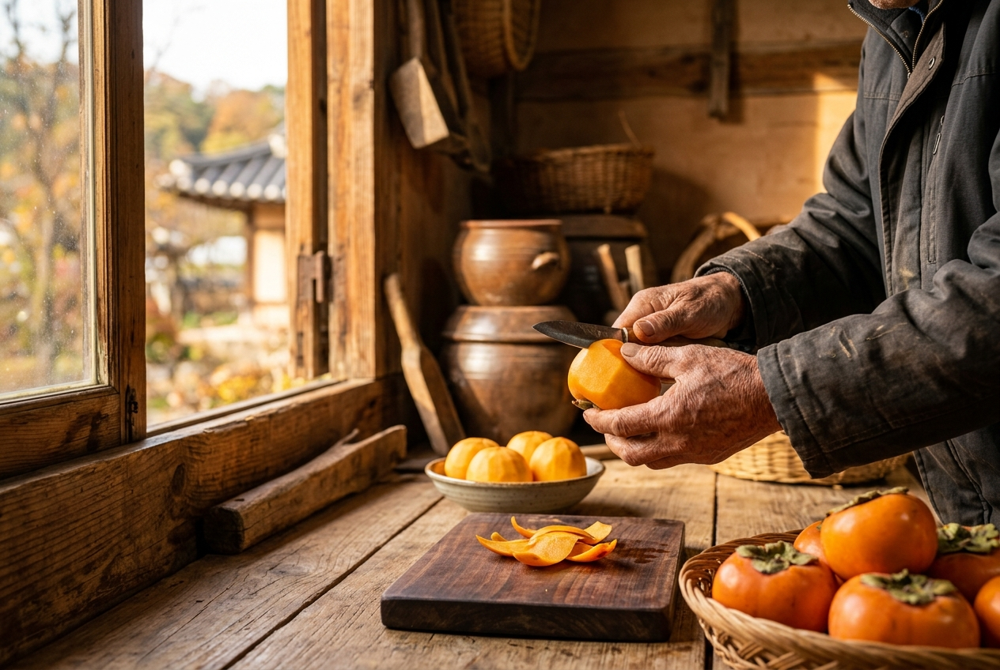

MADE BY HAND
기계보다 먼저,
기계보다 먼저,
사람의 눈과 손을 거칩니다.
좋은 감을 고르고, 하나씩 손질합니다.
한 봉지가 완성되기까지 손이 먼저 알고 있어야 할 일들입니다.

01 · CAREFUL PREPARATION
감 하나를 손질하는 데도
감 하나를 손질하는 데도
서두르지 않습니다.
껍질을 벗기고 모양을 살피는 손길.
눈에 잘 보이지 않는 작은 차이까지 확인하며 준비합니다.
좋은 맛은 준비하는 순간부터 시작됩니다.